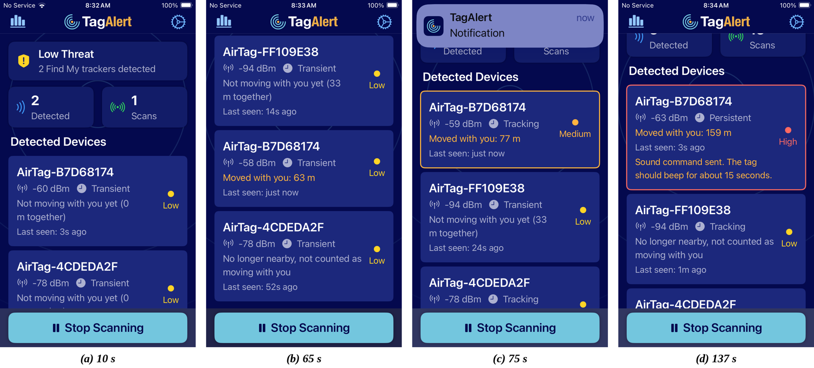
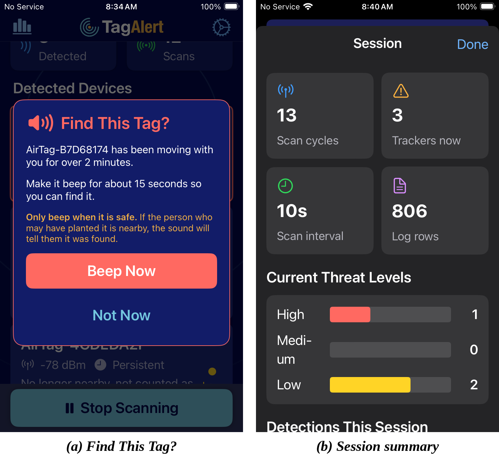
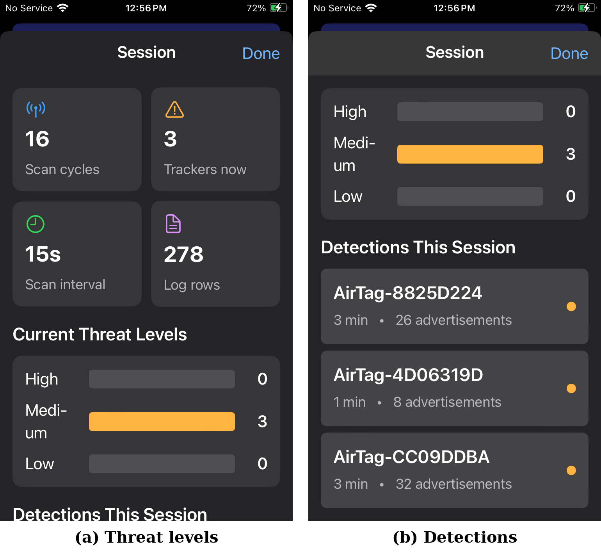

The problem
A planted tag can follow you for hours before it makes a sound
An AirTag is the size of a coin. Apple's protections help, but a tag separated from its owner can wait 8 to 24 hours before it beeps. TagAlert is for the moment you need an answer: open it, and within seconds you know what is near you; within a minute or two, whether it is moving with you.
How it works
iOS hides the AirTag signal, so TagAlert knocks on the door
In every scan logged, iOS reported zero Apple Find My data, even with a tag a meter away. To an app, an AirTag is just an unnamed Bluetooth device. TagAlert checks each one directly.
Queue
Every unnamed device seen in a scan joins a probe queue, strongest signal first, so a tag on your body is checked early.
Connect
A brief connection: 6 s for a strong device, 10 s for a weak one, with retries that back off at 10, 20 and 40 s.
Ask for one service
TagAlert requests only 7DFC9000-7D1C-4951-86AA-8D9728F8D66C, the AirTag's service. The check takes about 1 to 4 seconds.
Decide and disconnect
Offers the service: it is an AirTag. Otherwise it is ignored. TagAlert never pairs with or changes the device.
The method follows the AirGuard research project at TU Darmstadt, which identified this service by reverse engineering. TagAlert's code is an independent implementation in Swift.
Threat levels
Nearby is not the same as following
Unknown AirTags turned up on 4 of 7 test walks through an ordinary neighborhood. An app that alarms at every one gets deleted, so TagAlert asks whether a tag is moving with you, using the step counter and never your location.
Low
Seen under 1 minute, or not moving with you.
Medium
Seen 1 to 2 minutes and moving with you. Notification.
High
Seen 2 minutes or more and moving with you. Notification, then a one-time offer to make the tag beep.
Moving with you means 50 m walked (or 60 s in a vehicle) between the tag's first and latest sighting, seen in at least 60% of scans over at least 4 cycles, and seen in the last 25 s. Signal strength is not used: two tags side by side read about 15 dB apart.
The app in the field
Final walking test, build 6b



Key finding
The beep works exactly where it matters
Same table, strong signal. Apple's tags play their sound for a stranger only when separated from their owner, which is the case for a planted tag. The limit cuts both ways: a planter nearby with their phone cannot be alerted by the beep either.
Results
Walking tests
One tag in a pocket, the same residential loop. Each rule change was driven by a specific log; after the fixes in B2 and B3, the last four walks had no false alerts.
| Walk | Build | Confirmed | Medium | High | False alerts |
|---|---|---|---|---|---|
| B1 | 5n | 94 s | 171 s / 196 m | stopped first | 0 |
| B2 | 5o | 6.5 s | 96 s / 117 m | stopped first | 1, fixed in 5p |
| B3 | 5r | 6.0 s | 71 s / 67 m | stopped first | 1, fixed in 5s |
| B4 | 5s | 8.9 s | 62 s / 58 m | 306 s / 380 m (5-min rule) | 0 |
| B5 | 5t | 7.1 s | 71 s / 73 m | 153 s / 179 m (2.5-min rule) | 0 |
| B6 | 6a | 28 s | 87 s / 93 m | 179 s / 158 m (2.5-min rule) | 0 |
| B7 | 6b | 6.1 s | 72 s / 77 m | 123 s / 148 m (2-min rule) | 0 |
Battery: 13% in 47 minutes of continuous scanning with the screen on, about 17% per hour, on an iPhone SE (2nd gen). Screen use is included, so the app's own share is lower. Built for a check, not all-day monitoring.
Limits
What TagAlert does not do
- It works only while the app is open; iOS does not deliver these scans to a suspended app.
- Tested on one phone, one home and one route, with three to four AirTags over nine days.
- iOS hides whether a tag is with its owner, so a stranger's tag that genuinely rides your whole route is flagged too. That is a false alarm, not a safety risk.
- The beep works only on a tag separated from its owner and in range.
- AirTags only. Other Find My accessories, Samsung SmartTags and Tile are future work, along with Android.
Materials